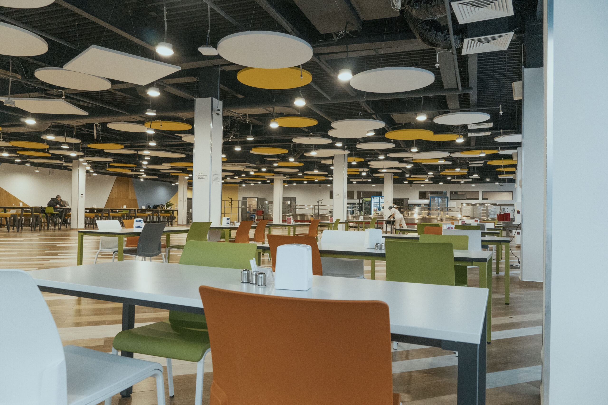
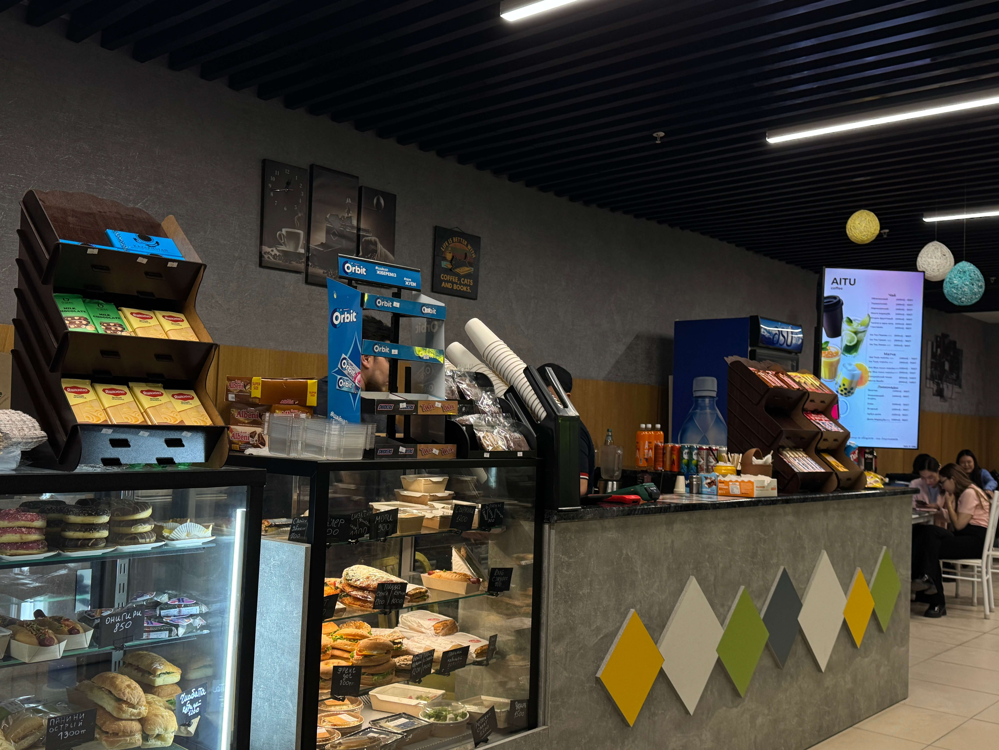
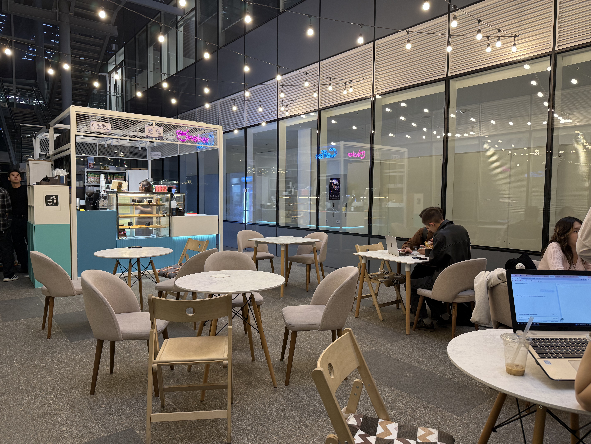
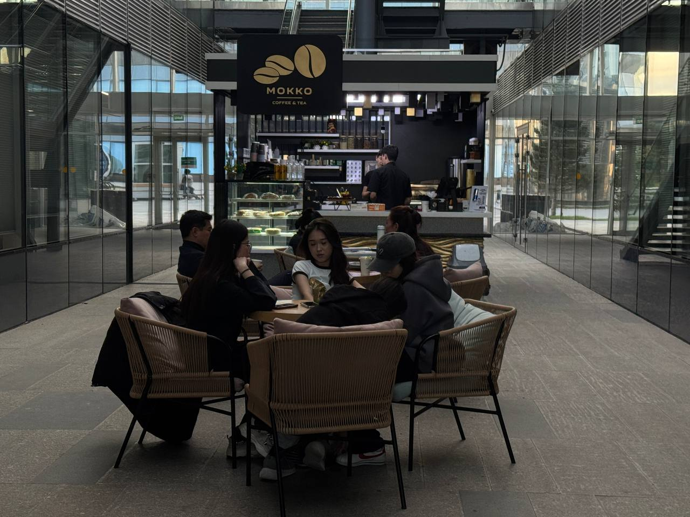

Cafeteria
Hot dishes, soups, and fresh pastries at the lowest prices on campus — the biggest and busiest spot, so expect a line around lunchtime.
What's on offer, where to find each place, and when it's open - everything you need before you leave for a break.

Hot dishes, soups, and fresh pastries at the lowest prices on campus — the biggest and busiest spot, so expect a line around lunchtime.

Coffee, tea, and sandwiches in a cozy indoor corner — good if you want to sit with a laptop and get some work done.

Coffee, salads, sandwiches, croissants, and desserts from an open kiosk with small tables — easy for a quick chat between classes.

Coffee and something sweet from a small open kiosk — a quick stop between classes.
| Dining spot | Where | Days | Hours |
|---|---|---|---|
| Cafeteria | C1.3 | Mon–Fri | 9:00–20:00 |
| Coffee Lake | C1.2(atrium) | Mon–Sat | 9:00–20:00 |
| Sheker | Between C1.1 and C1.2 | Mon–Sat | 10:00–19:30 |
| Mokko | Between C1.2 and C1.3 | Mon–Fri | 10:00–19:00 |

Group SE-2504 Team-lead
Researched font combinations and found a great pairing, Arima Madurai + Mulish, on Figma’s Font Pairings resource.
Developed the color palette based on the actual locations: green from the cafeteria, birch tones from Shaker, yellow/gold from Mocco, and orange from Coffee Lake. I used Coolors to create a cohesive palette that matched the overall style.
For the logo, I kept the process simple and used Gemini to adapt the original logo to fit our concept.
Finally, I started building the website. For the Eateries section, I used photos from Aitumap and, when needed, asked my teammate to take photos of the locations.